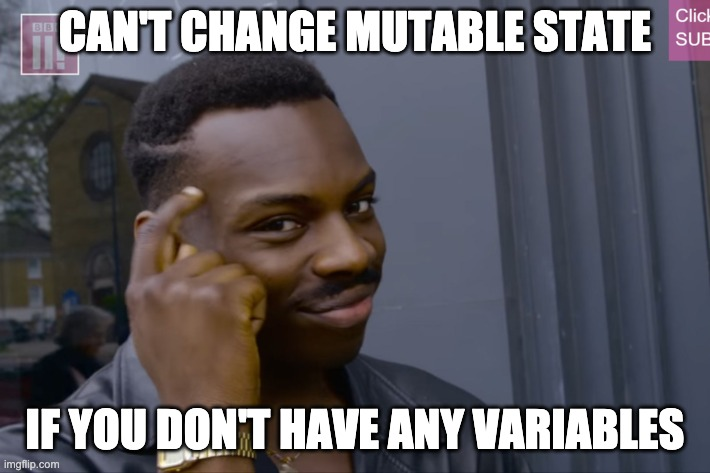

Professor Abdul-Quader
Java Miscellany
3 types of technical interview questions:
Common asynchronous design pattern.
Alerting system.
Data structure?
Quick poll:
Have you heard of “imperative” and/or “declarative” programming?

String list = "[1, 3, 5, 7, 9]";
int[] intList = Arrays.stream(list.split(",")).map(String::trim).mapToInt(Integer::valueOf).toArray();Yikes!
map: apply a function to the elements of the stream
Project 3:
int[] colors array)Collectors.groupingBy(mappingFunction)
Map<Integer, List<Integer>>Why?
Project 3:
forEach method.What’s the right lambda expression?
merge method(key, value) -> { }for (int i = 0; i < rosters.size(); i++) {
final int course = i;
rosters.get(i).forEach(student -> studentToCourseMap.putIfAbsent(student, new ArrayList<>()));
rosters.get(i).forEach(student -> studentToCourseMap.merge(student, Collections.singletonList(course),
(oldCourses, newCourses) -> {
oldCourses.addAll(newCourses);
return oldCourses;
}));
}